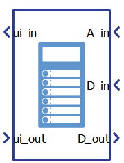
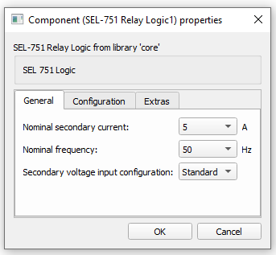
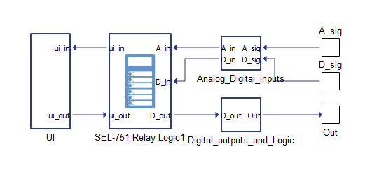
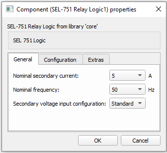
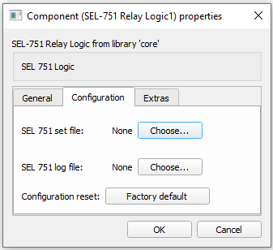
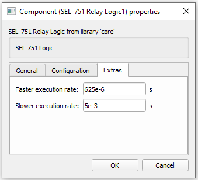

SEL-751 Relay Logic
Description of the SEL-751 Relay Logic component, which represents a parametrizable SEL-751 Relay with built in protection functions
The SEL-751 Relay Logic component, shown in Table 1, is a Schematic Editor library block from the Protection part, of the Microgrid library. It implements the following protection elements: Overcurrent, Time-Overcurrent, Overvoltage, and Undervoltage with the Trip/Close and Reclose Supervision Logic. The model is parametrized using two SEL-751 configuration files (Group settings and Logic settings). Initially, if the files are not loaded, the SEL-751 Relay Logic component is parametrized with the SEL-751 Factory Default values. Please refer to the SEL 751's instruction manual for the Factory Default values.
| component | component dialog window | component parameters |
|---|---|---|
 SEL-751 Relay Logic |
 |
|
Protection functions
The SEL-751 model includes the following protection elements:
- Instantaneous/Definite-Time Overcurrent Elements
- Time-Overcurrent Elements
- Voltage Elements
- Frequency protection
- Rate of change of frequency protection
Phase overcurrent protection operates on the maximum phase current, neutral overcurrent protection operates on the neutral current, ground overcurrent protection operates on the sum of the three phase currents, and negative-sequence overcurrent protection operates on three times the negative-sequence current.
| Setting | Description |
|---|---|
| 50xnP | Pickup of level n of the function, in secondary amps. If set as “OFF”, the level is disabled. |
| 50xnD | Intentional delay of the operation of level n of the function, in seconds. |
| 50xnTC | Torque control SELogic equation. |
One level of inverse Time-Overcurrent Elements (TOC) is available for A-, B-, C-phases and negative-sequence (Q) overcurrent. Two levels of inverse time-overcurrent elements are available for maximum phase (P), neutral (N), and residual (R) overcurrent. Five U.S. and five IEC inverse characteristics are supported. Each element can be torque controlled (enabled/disabled) through the use of appropriate SELogic control equations (when 51P1TC := IN301 the 51P1 element is operational only if IN401 is asserted).
The phase elements operate on phase A current, phase B current, and phase C current, respectively. The maximum phase inverse time-overcurrent protection operates on the maximum of the three phase currents, neutral inverse time-overcurrent protection operates on neutral current and ground inverse time-overcurrent protection operates on the sum of the three phase currents and negative-sequence overcurrent protection operates on three times the negative-sequence current.
The settings necessary to set the inverse time overcurrent elements are listed in Table 3. The exact Setting Names, according to the element and level of interest, could be derived by replacing x with “A”, “B”, “C”, “P1”, “P2”, “Q”, “N1”, “N2”, “G1”, or “G2”.
| Setting | Description |
|---|---|
| 51xP | Pickup of the TOC element, in secondary amps. If set as “OFF”, the level is disabled. |
| 51xC | Curve selection of the TOC element. |
| 51xTD | Time dial of the TOC element. |
| 51xRS | Electromechanical reset delay of the TOC element. If set as “Y”, the resetting time is computed using the selected reset curve. If set as “N”, the reset time is instantaneous. |
| 51xCT | Constant time that is added to the operating time given by the characteristic curve, in seconds. |
| 51xMR | Minimum response time of the TOC element, in seconds. |
| 51xTC | Torque control SELogic equation. |
The current transformer (CT) ratio settings configure the relay to accurately scale measured current values. The current transformer ratio settings are listed in Table 4.
| Setting | Description |
|---|---|
| CTR | Phase CT ratio, Parameter that is used for determining the secondary phase currents. |
| CTRN | Neutral CT ratio, Parameter that is used for determining the secondary neutral current. |
When the SEL-751 model is configured to use phase-to-phase connected voltage transformers (VT), setting DELTA_Y = DELTA, the relay provides two levels of phase-to-phase overvoltage and undervoltage elements. When the SEL-751 model is configured to use phase-to-neutral connected VTs, setting DELTA_Y = WYE, the relay provides two levels of phase-to-neutral, phase-to-phase overvoltage, and undervoltage elements. Two levels of negative-sequence overvoltage elements are available regardless of the voltage transformers connections. Two levels of zero-sequence overvoltage elements are available when the voltage inputs are connected in wye configuration (DELTA_Y := WYE).
When the setting “DELTA_Y” is set as “DELTA”, then phase to phase voltages are used as operating voltages. When this tap is set as “WYE”, then the phase to ground voltages are used as operating voltages. The phase undervoltage protections operate on the minimum phase operating voltage, the phase overvoltage protections operate on the maximum phase operating voltage. The zero-sequence voltage elements operate on zero-sequence voltage, while the negative-sequence voltage protection operates on three times the negative-sequence voltage.
The necessary settings for the voltage elements are listed in Table 5. The exact Setting Names, according to the element and level of interest, could be derived by replacing x with “P”, “PP”, “G”, or “Q”, and replacing n with “1” or “2”.
| Setting | Description |
|---|---|
| 27xnP | Pickup of the undervoltage level 27xn. If set as “OFF”, the level is disabled. |
| 27xnD | Time delay of the undervoltage 27xn, in seconds. |
| 59xnP | Pickup of the overvoltage level 59xn. If set as “OFF”, the level is disabled. |
| 59xnD | Time delay of the overvoltage level 59xn, in seconds. |
The voltage configuration settings configure the relay voltage inputs to correctly measure and scale the voltage signals. The supported voltage settings are listed in Table 6. For additional information and examples, refer to the SEL-751 instruction manual.
| Setting | Description |
|---|---|
| PTR | Phase PT ratio, Parameter that is used for determining the secondary phase voltages. |
| LEA_R | Phase Low Energy Analog (LEA) ratio, Parameter that defines used voltage sensor ratio. |
| DELTA_Y | Connection type |
| VNOM | Line voltage |
The relay provides six levels of over- and underfrequency elements. Each element has independent trip level and time-delay settings, and can be torque controlled using appropriate SELogic control equations. Individual elements operate as an overfrequency protection when the trip level setting is greater than the nominal frequency setting. When the trip level setting for an element is less than the nominal frequency setting, it operates as an underfrequency protection.
The settings necessary to set over- and underfrequency elements are listed in Table 7. The exact Setting Names, according to the level of interest, could be derived by replacing n with a number between "1" and "6".
| Setting | Description |
|---|---|
| 81DnTP | Pickup of the over- and underfrequency element, in Hz. If set as "OFF", the level is disabled. |
| 81DnTD | Time delay of the over- and underfrequency element. |
| 81DnTC | Torque control SELogic equation. |
Four levels of rate of change of frequency elements (81R) are available. There are three settings that are common for all four levels of protection: E81R, 81RVSUP, and 81RISUP. E81R is used to enable the number of elements you want to use. Voltage and current supervision are specified with the 81RVSUP and 81RISUP settings, respectively. If these settings are specified, a minimum positive-sequence voltage and/or current are necessary for operation of this protection. If these settings are set to OFF, this protection can operate without current and/or voltage supervision. The element is also supervised by the Relay Word FREQTRK, which ensures that the relay is tracking and measuring the system frequency.
Other settings necessary to set 81R elements are listed in Table 8. The exact Setting Names, according to the level of interest, could be derived by replacing n with "1", "2", "3", or "4".
| Setting | Description |
|---|---|
| E81R | Enables the number of elements you want to use. If set to "N", all levels are disabled. |
| 81RVSUP | Voltage supervision. If set to "OFF", this supervision is disabled. |
| 81RISUP | Current supervision. If set to "OFF", this supervision is disabled. |
| 81RnTP | Pickup of the 81R element, in Hz/s. If set to "OFF", the level is disabled. |
| 81RnTRND | Used for limiting operation of the 81R element to INC (increasing) or DEC (decreasing) frequency. Should be set to ABS if the frequency trend is not important. |
| 81RnTD | Time delay of the 81R element. |
| 81RnDO | Drop-out time delay of the 81R element. |
| 81RnTC | Torque control SELogic equation. |
SEL-751 Relay Logic inputs and outputs
The SEL-751 Relay Logic component has 3 inputs - Relay input from the User Interface (ui_out), Relay analog input (A_in), Relay digital input (D_in) - and 2 outputs Relay digital output (D_out) and Relay output to the User Interface (ui_in).
ui_out is the vectorized input which consists of the 4 elements which are described in Table 9 and where signals orders are given. These signals are used to send basic manual commands to the relay. These are digital signals implemented in a positive logic, asserted when high and deasserted when low.
| Number | Input | Description | Signal range |
|---|---|---|---|
| 0 | TARGET RESET_PUSHBUTTON | Target reset command. | 0 or 1 |
| 1 | LOCK_PUSHBUTTON | Relay lock command. | 0 or 1 |
| 2 | CLOSE_PUSHBUTTON | Relay close command. | 0 or 1 |
| 3 | TRIP_PUSHBUTTON | Relay trip command. | 0 or 1 |
A_in is the vectorized input which consists of the 20 elements which are described in Table 10 and where signal orders are given. These are analog signals which are equal to the measured voltages or currents. All these inputs can be easily obtained from the Three-Phase Meter component that is also part of the Microgrid library. Please refer to the SEL-751 Example model.
| Number | Analog Input | Description |
|---|---|---|
| 0 | VAn | Phase A voltage. [V] |
| 1 | VBn | Phase B voltage. [V] |
| 2 | VCn | Phase C voltage. [V] |
| 3 | VAB | Voltage between phases A and B. [V] |
| 4 | VBC | Voltage between phases B and C. [V] |
| 5 | VCA | Voltage between phases C and A. [V] |
| 6 | IA | Phase A current measurement. [A] |
| 7 | IB | Phase B current measurement. [A] |
| 8 | IC | Phase C current measurement. [A] |
| 9 | IN | Neutral phase current measurement. [A] |
| 10-19 | Reserved | Analog inputs that are not used. |
D_in is the vectorized input which consists of the 20 elements. Supported digital inputs are given in Table 11 along with the signal order. These are digital signals which can be used for digital feedback signals (from contactor for example) or used as external logic that can influence the internal protection functions. This can be defined from the imported group settings file using the SELogic equations definition in the desired protection functions.
| Number | Digital Input | Description | Signal range |
|---|---|---|---|
| 0 | IN101 | Relay digital input 101. | 0 or 1 |
| 1 | IN102 | Relay digital input 102. | 0 or 1 |
| 2 | IN301 | Relay digital input 301. | 0 or 1 |
| 3 | IN302 | Relay digital input 302. | 0 or 1 |
| 4 | IN303 | Relay digital input 303. | 0 or 1 |
| 5 | IN304 | Relay digital input 304. | 0 or 1 |
| 6 | IN305 | Relay digital input 305. | 0 or 1 |
| 7 | IN306 | Relay digital input 306. | 0 or 1 |
| 8 | IN307 | Relay digital input 307. | 0 or 1 |
| 9 | IN308 | Relay digital input 308. | 0 or 1 |
| 10-19 | Reserved | Digital inputs that are not used. | 0 or 1 |
D_out is the vectorized output which consists of the 20 elements. Supported digital outputs are given in Table 12 along with the signal order. Relay digital outputs are programmable and their functionality is defined from the relay logic settings file using SELogic equations for the desired digital output.
| Number | Digital output | Description | Signal range |
|---|---|---|---|
| 0 | OUT101 | Relay digital output 101. | 0 or 1 |
| 1 | OUT102 | Relay digital output 102. | 0 or 1 |
| 2 | OUT103 | Relay digital output 103. | 0 or 1 |
| 3 | OUT301 | Relay digital output 301. | 0 or 1 |
| 4 | OUT302 | Relay digital output 302. | 0 or 1 |
| 5 | OUT303 | Relay digital output 303. | 0 or 1 |
| 6 | OUT304 | Relay digital output 304. | 0 or 1 |
| 7 | OUT305 | Relay digital output 305. | 0 or 1 |
| 8 | OUT306 | Relay digital output 306. | 0 or 1 |
| 9 | OUT307 | Relay digital output 307. | 0 or 1 |
| 10 | OUT308 | Relay digital output 308. | 0 or 1 |
| 11-19 | Reserved | Digital outputs that are not used. | 0 or 1 |
ui_in is the vectorized output which consists of the 227 elements which are separated in three parts: digital outputs that control user Target LEDs, analog outputs with measurements and Relay Word Bits (RWB) digital outputs.
The first 20 elements are digital outputs that control the Target LEDs. All Target LEDs are fixed pre-programmed with a SEL-751 Default settings. Supported LED digital outputs are given in Table 13 with the corresponding signals' position in the ui_in vectorized output.
| Number | LED Signal | Pre-programmed functionality |
|---|---|---|
| 0 | ENABLED | 1 |
| 1 | TRIP | TRIP |
| 2 | INST OC | ORED50T |
| 3 | PHASE OC |
51AT OR 51BT OR 51CT OR 51P1T OR 51P2T |
| 4 | GND/NEU OC |
51N1T OR 51G1T OR 51N2T OR 51G2T |
| 5 | NEG SEQ OC | 51QT |
| 6 | O/U FREQ | 81D1T or 81D2T or 81D3T or 81D4T |
| 7 | BRKR FAIL | 0 (functionallity not supported) |
| 8-19 | Reserved | Digital outputs that are not used. |
The next 40 elements are reserved for analog signals of measured voltages and currents. Supported analog measurements are given in Table 14 with the corresponding signals' position in the ui_in vectorized output.
| Number | Signal | Description |
|---|---|---|
| 20 | |VPmax| | Maximum Phase Voltage Magnitude [V] |
| 21 | |VPmin| | Minimum Phase Voltage Magnitude [V] |
| 22 | |VPPmax| | Maximum Phase to Phase Voltage Magnitude [V] |
| 23 | |VPPmin| | Minimum Phase to Phase Voltage Magnitude [V] |
| 24 | |3V2| | Negative Sequence Voltage Magnitude [V] |
| 25 | |3V0| | Zero-Sequence Voltage Magnitude [V] |
| 26 | |VA| | A-Phase Voltage Magnitude [V] |
| 27 | |VB| | B-Phase Voltage Magnitude [V] |
| 28 | |VC| | C-Phase Voltage Magnitude [V] |
| 29 | |VAB| | AB Phase to Phase Voltage Magnitude [V] |
| 30 | |VBC| | BC Phase to Phase Voltage Magnitude [V] |
| 31 | |VCA| | CA Phase to Phase Voltage Magnitude [V] |
| 32 | |IA| | A-Phase Current Magnitude [A] |
| 33 | |IB| | B-Phase Current Magnitude [A] |
| 34 | |IC| | C-Phase Current Magnitude [A] |
| 35 | |IP| | Maximum Phase Current Magnitude [A] |
| 36 | |IN| | Core-Balance Current Magnitude [A] |
| 37 | |IG| | Residual Current Magnitude [A] |
| 38 | |3I2| | Negative-Sequence Current Magnitude [A] |
| 39 | IA_ang | Phase angle of the A-Phase current [Deg] |
| 40 | IB_ang | Phase angle of the B-Phase current [Deg] |
| 41 | IC_ang | Phase angle of the C-Phase current [Deg] |
| 42 | VA_ang | Phase angle of the A-Phase voltage [Deg] |
| 43 | VB_ang | Phase angle of the B-Phase voltage [Deg] |
| 44 | VC_ang | Phase angle of the C-Phase voltage [Deg] |
| 45 | VAB_ang | Phase angle of the AB voltage [Deg] |
| 46 | VBC_ang | Phase angle of the BC voltage [Deg] |
| 47 | VCA_ang | Phase angle of the CA voltage [Deg] |
| 48 | Frequency-meas | Frequency [Hz] |
| 49-59 | Reserved | Outputs that are not used. |
The final 167 elements of the ui_in output are Relay Word Bits (RWB) digital outputs. These RWBs are calculated from the implemented protection functions and also can be used for defining the SELogic equations in the input configuration files. If some RWB is used but is not supported in the model, it will be automatically replaced with 0 and reported in the message log of Schematic Editor. Supported RWBs are given in Table 15 with their position in the ui_in vectorized output.
| Number | RWB output | Description |
|---|---|---|
| 60 | 50A1P | Level 1 A-phase instantaneous overcurrent element pickup. |
| 61 | 50B1P | Level 1 B-phase instantaneous overcurrent element pickup. |
| 62 | 50C1P | Level 1 C-phase instantaneous overcurrent element pickup. |
| 63 | 50P1P | Level 1 phase instantaneous overcurrent element pickup. |
| 64 | 67P1P | Level 1 phase directional overcurrent pickup. |
| 65 | 50P1T | Level 1 phase instantaneous overcurrent element trip. |
| 66 | 67P1T | Level 1 phase directional overcurrent trip. |
| 67 | 50N1P | Level 1 neutral-ground instantaneous overcurrent element pickup. |
| 68 | 67N1P | Level 1 neutral directional overcurrent pickup. |
| 69 | 50N1T | Level 1 neutral-ground instantaneous overcurrent element trip. |
| 70 | 67N1T | Level 1 neutral directional overcurrent trip. |
| 71 | 50G1P | Level 1 residual-ground instantaneous overcurrent element pickup. |
| 72 | 67G1P | Level 1 residual-ground directional overcurrent pickup. |
| 73 | 50G1T | Level 1 residual-ground instantaneous overcurrent element trip. |
| 74 | 67G1T | Level 1 residual-ground directional overcurrent trip. |
| 75 | 50Q1P | Level 1 negative-sequence instantaneous overcurrent element pickup. |
| 76 | 67Q1P | Level 1 negative-sequence directional overcurrent pickup. |
| 77 | 50Q1T | Level 1 negative-sequence instantaneous overcurrent element trip. |
| 78 | 67Q1T | Level 1 negative-sequence directional overcurrent trip. |
| 79 | 50P2P | Level 2 phase instantaneous overcurrent element pickup. |
| 80 | 67P2P | Level 2 phase directional overcurrent pickup. |
| 81 | 50P2T | Level 2 phase instantaneous overcurrent element trip. |
| 82 | 67P2T | Level 2 phase directional overcurrent trip. |
| 83 | 50N2P | Level 2 neutral-ground instantaneous overcurrent element pickup. |
| 84 | 67N2P | Level 2 neutral directional overcurrent pickup. |
| 85 | 50N2T | Level 2 neutral-ground instantaneous overcurrent element trip. |
| 86 | 67N2T | Level 2 neutral directional overcurrent trip. |
| 87 | 50G2P | Level 2 residual-ground instantaneous overcurrent element pickup. |
| 88 | 67G2P | Level 2 residual-ground directional overcurrent pickup. |
| 89 | 50G2T | Level 2 residual-ground instantaneous overcurrent element trip. |
| 90 | 67G2T | Level 2 residual-ground directional overcurrent trip. |
| 91 | 50Q2P | Level 2 negative-sequence instantaneous overcurrent element pickup. |
| 92 | 67Q2P | Level 2 negative-sequence directional overcurrent pickup. |
| 93 | 50Q2T | Level 2 negative-sequence instantaneous overcurrent element trip. |
| 94 | 67Q2T | Level 2 negative-sequence directional overcurrent trip. |
| 95 | 50P3P | Level 3 phase instantaneous overcurrent element pickup. |
| 96 | 67P3P | Level 3 phase directional overcurrent pickup. |
| 97 | 50P3T | Level 3 phase instantaneous overcurrent element trip. |
| 98 | 67P3T | Level 3 phase directional overcurrent trip. |
| 99 | 50N3P | Level 3 neutral-ground instantaneous overcurrent element pickup. |
| 100 | 67N3P | Level 3 neutral directional overcurrent pickup. |
| 101 | 50N3T | Level 3 neutral-ground instantaneous overcurrent element trip. |
| 102 | 67N3T | Level 3 neutral directional overcurrent trip. |
| 103 | 50G3P | Level 3 residual-ground instantaneous overcurrent element pickup. |
| 104 | 67G3P | Level 3 residual-ground directional overcurrent pickup. |
| 105 | 50G3T | Level 3 residual-ground instantaneous overcurrent element trip. |
| 106 | 67G3T | Level 3 residual-ground directional overcurrent trip. |
| 107 | 50Q3P | Level 3 negative-sequence instantaneous overcurrent element pickup. |
| 108 | 67Q3P | Level 3 negative-sequence directional overcurrent pickup. |
| 109 | 50Q3T | Level 3 negative-sequence instantaneous overcurrent element trip. |
| 110 | 67Q3T | Level 3 negative-sequence directional overcurrent trip. |
| 111 | 50P4P | Level 4 phase instantaneous overcurrent element pickup. |
| 112 | 67P4P | Level 4 phase directional overcurrent pickup. |
| 113 | 50P4T | Level 4 phase instantaneous overcurrent element trip. |
| 114 | 67P4T | Level 4 phase directional overcurrent trip. |
| 115 | 50N4P | Level 4 neutral-ground instantaneous overcurrent element pickup. |
| 116 | 67N4P | Level 4 neutral directional overcurrent pickup. |
| 117 | 50N4T | Level 4 neutral-ground instantaneous overcurrent element trip. |
| 118 | 67N4T | Level 4 neutral directional overcurrent trip. |
| 119 | 50G4P | Level 4 residual-ground instantaneous overcurrent element pickup. |
| 120 | 67G4P | Level 4 residual-ground directional overcurrent pickup. |
| 121 | 50G4T | Level 4 residual-ground instantaneous overcurrent element trip. |
| 122 | 67G4T | Level 4 residual-ground directional overcurrent trip. |
| 123 | 50Q4P | Level 4 negative-sequence instantaneous overcurrent element pickup. |
| 124 | 67Q4P | Level 4 negative-sequence directional overcurrent pickup. |
| 125 | 50Q4T | Level 4 negative-sequence instantaneous overcurrent element trip. |
| 126 | 67Q4T | Level 4 negative-sequence directional overcurrent trip. |
| 127 | ORED50T | Logical OR of all the instantaneous overcurrent elements tripped outputs. |
| 128 | 51AP | A-phase time-overcurrent element pickup. |
| 129 | 51AT | A-phase time-overcurrent element trip. |
| 130 | 51AR | A-phase time-overcurrent element reset. |
| 131 | 51BP | B-phase time-overcurrent element pickup. |
| 132 | 51BT | B-phase time-overcurrent element trip. |
| 133 | 51BR | B-phase time-overcurrent element reset. |
| 134 | 51CP | C-phase time-overcurrent element pickup. |
| 135 | 51CT | C-phase time-overcurrent element trip. |
| 136 | 51CR | C-phase time-overcurrent element reset. |
| 137 | 51P1P | Level 1 maximum phase time-overcurrent element pickup. |
| 138 | 51P1T | Level 1 maximum phase time-overcurrent element trip. |
| 139 | 51P1R | Level 1 maximum phase time-overcurrent element reset. |
| 140 | 51P2P | Level 2 maximum phase time-overcurrent element pickup. |
| 141 | 51P2T | Level 2 maximum phase time-overcurrent element trip. |
| 142 | 51P2R | Level 2 maximum phase time-overcurrent element reset. |
| 143 | 51QP | Negative-sequence time-overcurrent element pickup. |
| 144 | 51QT | Negative-sequence time-overcurrent element trip. |
| 145 | 51QR | Negative-sequence time-overcurrent element reset. |
| 146 | 51N1P | Level 1 neutral-ground time-overcurrent element pickup. |
| 147 | 51N1T | Level 1 neutral-ground time-overcurrent element trip. |
| 148 | 51N1R | Level 1 neutral-ground time-overcurrent element reset. |
| 149 | 51N2P | Level 2 neutral-ground time-overcurrent element pickup. |
| 150 | 51N2T | Level 2 neutral-ground time-overcurrent element trip. |
| 151 | 51N2R | Level 2 neutral-ground time-overcurrent element reset. |
| 152 | 51G1P | Level 1 residual-ground time-overcurrent element pickup. |
| 153 | 51G1T | Level 1 residual-ground time-overcurrent element trip. |
| 154 | 51G1R | Level 1 residual-ground time-overcurrent element reset. |
| 155 | 51G2P | Level 2 residual-ground time-overcurrent element pickup. |
| 156 | 51G2T | Level 2 residual-ground time-overcurrent element trip. |
| 157 | 51G2R | Level 2 residual-ground time-overcurrent element reset. |
| 158 | ORED51T | Logical OR of all the time overcurrent elements tripped outputs. |
| 159 | 27P1 | Level 1 phase undervoltage element pickup. |
| 160 | 27P1T | Level 1 phase undervoltage element trip. |
| 161 | 27P2 | Level 2 phase undervoltage element pickup. |
| 162 | 27P2T | Level 2 phase undervoltage element trip. |
| 163 | 3P27 | Three-phase undervoltage pickup when all three phases are below 27P1P. |
| 164 | 27PP1 | Level 1 phase-to-phase undervoltage element pickup. |
| 165 | 27PP1T | Level 1 phase-to-phase undervoltage element trip. |
| 166 | 27PP2 | Level 2 phase-to-phase undervoltage element pickup. |
| 167 | 27PP2T | Level 2 phase-to-phase undervoltage element trip. |
| 168-172 | Reserved | Not used. |
| 173 | 59P1 | Level 1 phase overvoltage element pickup. |
| 174 | 59P1T | Level 1 phase overvoltage element trip. |
| 175 | 59P2 | Level 2 phase overvoltage element pickup. |
| 176 | 59P2T | Level 2 phase overvoltage element trip. |
| 177 | 59G1 | Level 1 zero-sequence instantaneous overvoltage element pickup. |
| 178 | 59G1T | Level 1 zero-sequence instantaneous overvoltage element trip. |
| 179 | 59G2 | Level 2 zero-sequence instantaneous overvoltage element pickup. |
| 180 | 59G2T | Level 2 zero-sequence instantaneous overvoltage element trip. |
| 181 | 3P59 | Three-phase overvoltage pickup when all three phases are above 59P1P. |
| 182 | 59PP1 | Level 1 phase-to-phase overvoltage element pickup. |
| 183 | 59PP1T | Level 1 phase-to-phase overvoltage element trip. |
| 184 | 59PP2 | Level 2 phase-to-phase overvoltage element pickup. |
| 185 | 59PP2T | Level 2 phase-to-phase overvoltage element trip. |
| 186 | 59Q1 | Level 1 negative-sequence instantaneous overvoltage element pickup. |
| 187 | 59Q1T | Level 1 negative-sequence instantaneous overvoltage element trip. |
| 188 | 59Q2 | Level 2 negative-sequence instantaneous overvoltage element pickup. |
| 189 | 59Q2T | Level 2 negative-sequence instantaneous overvoltage element trip. |
| 190-193 | Reserved | Not used. |
| 194 | TR | Trip SELOGIC control equation (also has been referred to as TRIPEQ). |
| 195 | REMTRIP | Remote trip. |
| 196 | ULTRIP | Unlatch Trip SELOGIC control equation state. |
| 197 | 52A | Circuit breaker N/O contact. |
| 198 | 52B | Circuit breaker N/C contact. |
| 199 | CL | CL Close SELOGIC equation. |
| 200 | ULCL | Unlatch Close SELOGIC control equation state. |
| 201 | TRGTR | Target reset. |
| 202 | CLOSE | Initiates closing action when asserted. |
| 203 | RCSF | Reclose supervision failure (asserts for Tslow time period). |
| 204 | TRIP | Breaker trip. |
| 205 | TRIPLEDRST | Reset the trip led. |
| 206-210 | Reserved | Not used. |
| 211 | IN101 | Contact Input IN101. |
| 212 | IN102 | Contact Input IN102. |
| 213 | IN301 | Contact Input IN301. |
| 214 | IN302 | Contact Input IN302. |
| 215 | IN303 | Contact Input IN303. |
| 216 | IN304 | Contact Input IN304. |
| 217 | IN305 | Contact Input IN305. |
| 218 | IN306 | Contact Input IN306. |
| 219 | IN307 | Contact Input IN307. |
| 220 | IN308 | Contact Input IN308. |
| 221-225 | Reserved | Not used. |
| 226 | RSTTRGT | SELOGIC control equation: reset trip logic and targets when asserted. |
| 227 | 81D1T | Level 1 definite-time over- and underfrequency trip. |
| 228 | 81D2T | Level 2 definite-time over- and underfrequency trip. |
| 229 | 81D3T | Level 3 definite-time over- and underfrequency trip. |
| 230 | 81D4T | Level 4 definite-time over- and underfrequency trip. |
| 231 | 81D5T | Level 5 definite-time over- and underfrequency trip. |
| 232 | 81D6T | Level 6 definite-time over- and underfrequency trip. |
| 233 | ORED81T | ORed, over- and underfrequency element. |
| 234 | FREQTRK | Frequency tracking enable bit - tracking enabled when bit is asserted. |
| 235 | 81R1T | Level 1 rate of change of frequency element trip. |
| 236 | 81R2T | Level 2 rate of change of frequency element trip. |
| 237 | 81R3T | Level 3 rate of change of frequency element trip. |
| 238 | 81R4T | Level 4 rate of change of frequency element trip. |
| 239 | ORED81RT | ORed frequency rate of change element. |
In the Example, the SEL-751 Relay Logic component is surrounded by helping subsystems where inputs and outputs are also defined. This is shown in Figure 1. The UI subsystem contains just a small and representative part of the available SEL-751 Relay Logic signals. The selection is done using Bus Selector components and numbers from the upper tables. These subsystems can be freely changed according to the specific application or reused in the other models. This whole structure is located in the wrapping SEL-751 Subsystem in order to keep everything in one place. For the more information, please refer to the provided SEL-751 Example model.

Component dialogue box and parameters
The SEL-751 Relay Logic component dialogue box consists of four tabs for specifying parameters of the component.
Tab: "1 - General"
In this component tab, general parameters of the SEL-751 Relay Logic component can be specified.

| Parameter | Code name | Description |
|---|---|---|
| Nominal secondary current | Inom | SEL-751 nominal secondary current. [A] |
| Nominal frequency | Fnom | SEL-751 nominal frequency. [Hz] |
| Secondary voltage input configurtion | sec_v_in_conf | SEL-751 configuraton of the voltage inputs |
The secondary voltage input configuration is the parameter that defines what type of voltage inputs are used for the relay. When Standard is selected, 300 V rated inputs are presented on the relay; if LEA is selected, 8 V inputs are presented instead. This setting influences how the measured voltages are scaled internally. The PTR parameter is valid for the standard input. For LEA inputs, the LEA_R parameter is used instead of the PTR (see Table 6). Please refer to the SEL-751 instruction manual for additional information.
Tab: "2 - Configuration"
In this component tab, parameters that are related to the Configuration of the SEL-751 can be specified.

| Parameter | Code name | Description |
|---|---|---|
| SEL-751 group settings file | Import_settings | Settings file (txt format) for parameterizing the relay functions. This file can be exported from the AcSELerator tool. |
| SEL-751 group logic files | Import_logic | Logic file (txt format) for parameterizing the relay output logic. This file can be exported from the AcSELerator tool. |
| Configuration reset | to_factory_default | Revert applied settings to the Factory default. Please refer to the SEL-751 instruction manual for the Factory default values. |
Tab: "3 - Extras"
In this component tab, execution rate parameters can be specified.

| Parameter | Code name | Description |
|---|---|---|
| Faster execution rate | Tfast | Component faster execution rate. [s] |
| Slower execution rate | Tslow | Component slower execution rate. [s] |
The faster execution rate is the rate at which RMS values are calculated using a one-cycle cosine filter. By default this value is set to 625 us, which implies 32 samples per power system cycle (50 Hz) and it matches the real SEL-751 Relay. In this model, the Faster execution rate value can be changed in order to adapt the component to the other execution rates in the model if necessary. The cosine filter will work with a different number of samples depending on the execution rate. The minimum Faster execution rate is 500 us. The Slower execution rate is the rate at which protection functions are executed, which is set to four times faster than the power system cycle by default. The Slower execution rate can also be changed and adapted to other execution rates in the model. Changing the execution rates of the SEL-751 Relay Logic can produce small differences in dynamic responses relative to the default values.
Example
Overall behavior and control methodologies can be better understood with the use of the given example:
Model name: sel 751.tse
SCADA interface: sel 751.cus
Path: /examples/models/microgrid/SEL-751